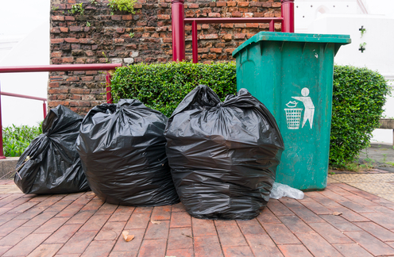
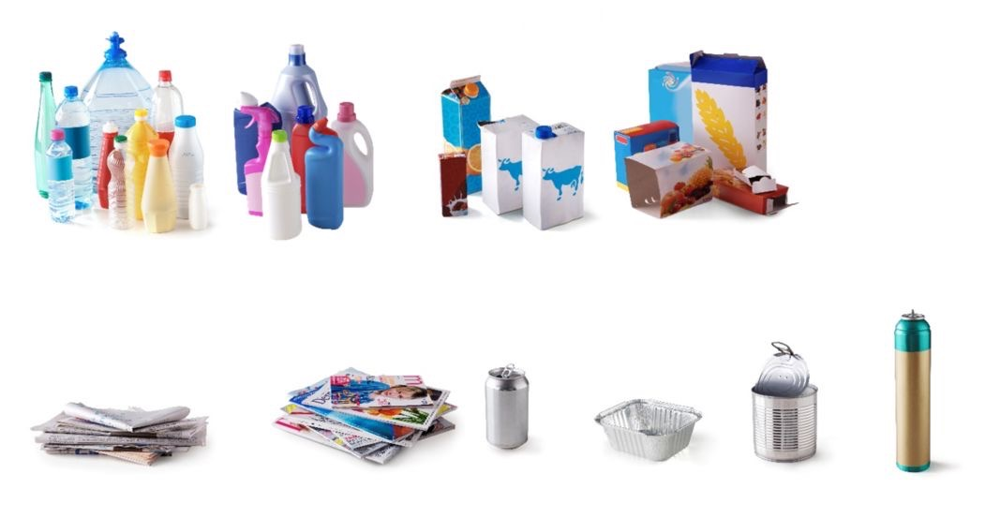
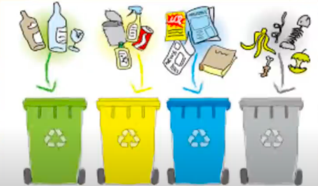
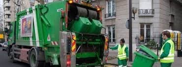
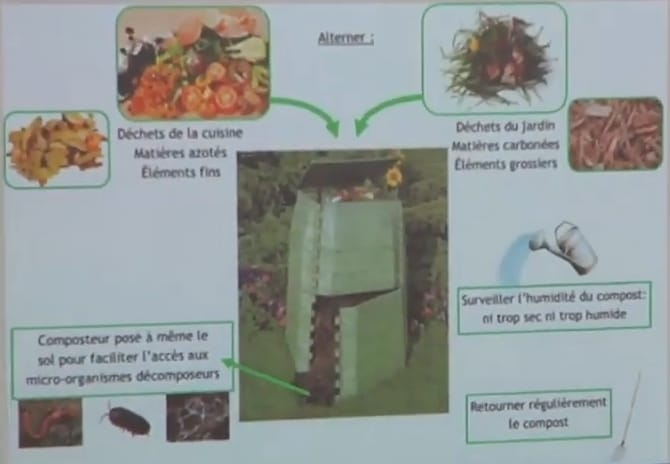
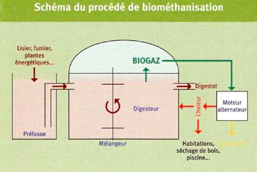
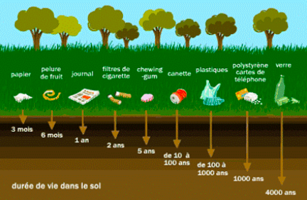

le premier chapitre:Les ordure menager issues de l'utilisation des matier organique et inorganique
♥dans ce sujet il y a beacaup de sources de dechets, mais nous allons nous concentrer uniquement sur les dechets menagers,que nous diviserons en deux categories.
introduction:
La croissance de la population, l'évolution des modes de consommation et l'urbanisation accélérée, demande une utilisation abusive de la matière organique (Substances combustibles dont les molécules sout des chaines carbonées, tel que le pétrole et ses dérivés et les substances organiques d'ongine anumale ou végétale (glucides lipides protides...)) et inorganique (Substances non combustibles. Sable, verre, métaux, sels minéraux, CO₂, H₂O), afin de produire de l'énergie.
La consommation croissante s'accompagne de la production de:
♣ Déchets solides tels que les déchets ménagers
♣ Déchets liquides tel que les eaux usées ménagères et industrielles
♣ Déchets gazeux libérés par la combustion de substances organiques énergétiques (charbou, gaz naturel, pétrole et dérivés).
En absence d'une bonne gestion, l'accumulation de ces déchets dans la nature pourrait devenir une source de nuisance pour les différents milieux de l'environnement et la santé de l'Homme
→c'est quoi un déchet ménager?
→Quels sont les types d'ordures?
Les ordures ménagères:
Les ordures ménagères sont les déchets : Toute substance ou tout objet, ou plus généralement tout bien meuble, dont le détenteur se défait ou dont il a l'intention ou l'obligation de se défaire que les foyers produisent au quotidien et qui sont jetés à la poubelle (par exemple : déchets alimentaires, papiers et ...
les type des ordures
les ordures ménagères résiduelles
les emballages recyclables
le verre
les encombrants
les déchets verts
les Déchets d'Equipements Electriques et Electroniques
les déchets dangereux ou non issus des activités de ménage (produits d'entretien), bricolage, jardinage des particuliers
des images expressives


→Comment se fait la collecte et le tri des ordures menageres?
→Quelles sont les techniques de traitement et de valorisation des ordures menageres?
La collecte et le tri des ordures menageres
le tri:Le tri des déchets et la collecte sélective sont des actions consistant à séparer et récupérer les déchets selon leur nature, à la source, pour éviter les contacts et les souillures. Ceci permet de leur donner une « seconde vie », le plus souvent par le réemploi et le recyclage, évitant ainsi leur simple destruction par incinération ou abandon en décharge et permettant par conséquent de réduire l'empreinte écologique des déchets.
Le tri des déchets a un impact positif sur l'environnement, puisque moins de déchets sont jetés et la matière réutilisée n'a pas besoin d'être extraite autre part.
⚫triage a domicile

Le tri à domicile implique généralement de séparer les déchets en différentes catégories, telles que le plastique, le papier, le verre, les déchets alimentaires, etc., pour faciliter le recyclage et la gestion des déchets. Chaque catégorie de déchets peut être collectée séparément pour être traitée de manière appropriée, favorisant ainsi des pratiques plus durables et respectueuses de l'environnement
⚫La collecte des ordures menageres

La collectedes ordures menageres se fait par leur assemblage et leur transport a l'aide de camion depuis les quartiers residentiel vers les decharges situees a la peripherique de la ville Mais cette collect et parfois insuffisante ce qui engendre l'apparition des points noirs.
⚫triage au centre de tri
→Comment fonctionne le centre de tri?
les materiaux,une fois isoles les uns des autres,sont achemines vers une presse a balles pour etre compactes sous forme de cubes.on appelle cela des"balles".☝
une seconde vie commence pour nos emballages sous forme de nouvelles matière premiere.
ces matière premieres sont ensuite achemines vers les usines de recyclages et de traitement.
→Quelles sont les methodes de traitement et de valorisation des ordures menageres?
Techniques de traitement et de valorisation des dechets
1-Le recyclage
Le recyclage est un procede de tratement et de reutilisation des dechets et de leur reintroduction dans un nouveau cycle de production
⚫Avantage:
Reduction du volume des dechets.
Eviter le gaspillage des ressources naturelles.
Reduire le cout d'extraction des matière premieres.
2-Le compostage
Le compostage est la decomposition de matiere organique par des microorganismes sous des condition en une matiere qu'on appelle compost(engrais organique)
⚫les ordure qu'on peut comporter et dans quelle condition
:

⚫Avantage du comportage:
Reduire de 20 a 30% la quantite de dechets menagers
Ameliorer la fertilite du sol
Eviter la pollution des nappes phreatiques
3-La production du biogaz ou bio methanisation
est un processus de decomposition des matieres organique en milieu anaerobie a l'aide de bacterie qui produisent le methane CH

⚫Avantage de la methanisation:
Reduction du volume des dechets
le biogaz est utilise comme source d'energie(electricite,chauffage)
En brulant le biogaz, on limite son action sur l'efffet de serre.
4-Incineration
L'incinerationest une combustion aerobie des ordures menageres dans un four,sous une haute temperature(800˚C a 1000°C).
⚫Avantage de l'incineration:
les dechet sont reduits de 90% en volume.
l'energie thermique liberee peut etre recuperee pour produire de l'electricite ou de la chaleur.
Les residus solides issus de l'incineration des dechets(machefers)sont etre utilises en travaux publics
⚫Les inconvenients de la methanisation:
Elle genere une pollution atmospherique a l'emission de qaz responsable de la destruction de la couche d'ozone.
5-Enfouissement des dechets
L'enfouissement des dechets c'est le stockage des dechets dans des decharges controlees,il concerne les dechets ultimes, c'est a dire impossible a recycler ou valoriser.
Les centre de stockages sont cnstitues d'unites de stockage appelees alveoles
⚫L'enfouissement presente deux inconvenients majeurs:
Il cree un biogaz extrement nocif,le methane, qui est un qaz a effet de srre.
Il produit le Lixiviat qui contamine le sol et les nappes phreatiques.
⚫La solution:
Les alveoles sont equipees:
D'un dispositif d'etancheification afin d'eviter la contamination du sol et des nappes phreatiques.
D'un reseau de drains permet egalement l'evacuation des lixiviats vers un bassin de traitement.
D'un systeme de captage du biogaz afin d'eviter la contamination de l'air
Limpacts des ordures menageres sur l'environnement, la sante et l'economie.
1-Impact sur l'environnement
Au niveau d'une decharge non controlee, le sol est en interaction direct avec les dechets et donc contamine par le lixiviat

L'incineration sauvage a l'air libre libere des gaz toxiques a effet de serre comme le dioxine
2-Impact sur la santé
L'incineration des dechets dans des decharges sauvage libere des gaz toxique qui sont une source de divers maladie respiratoires et cutanees ainsi qui des cancers.
Substance
Impact sur la sante
Les substances organique volatiles(cov)
Variables selon la nature du polluant, allant d'une irritation simple du nez, de la peau, des yeux et de la gorge par l'aldehyde, à une déficience du système respiratoire et des complications asthmatiques.
Dioxine
Substances nocives pour l'organisme même à faible dose. Au niveau de l'organisme elles agissent sur le système nerveux, endocrinien et immunitaire. Elles peuvent causer aussi de sérieux problèmes de fécondité.
Le dioxyde d'azote(NO2)
C'est un irritant des voies respiratoires, il aggrave les troubles respiratoires surtout chez les personnes âgées et les asthmatiques.
Le dioxyde de soufre(SO2)
Responsable d'irritation des yeux, du nez et de la gorge. Il fragilise la défense naturelle des voies respiratoires, permettant ainsi des lésions plus
3-Impact sur l'economie
L'indifférence envers les risques liés a l'accumulation des ordures ménagères a un impact néfaste sur l'environnement, et le cout économique de cette dégradation et très élevé.
La gestion rationnelle des ordures ménagères nécessite la construction des centres de valorisation ce qui demande des ressources financières importantes.